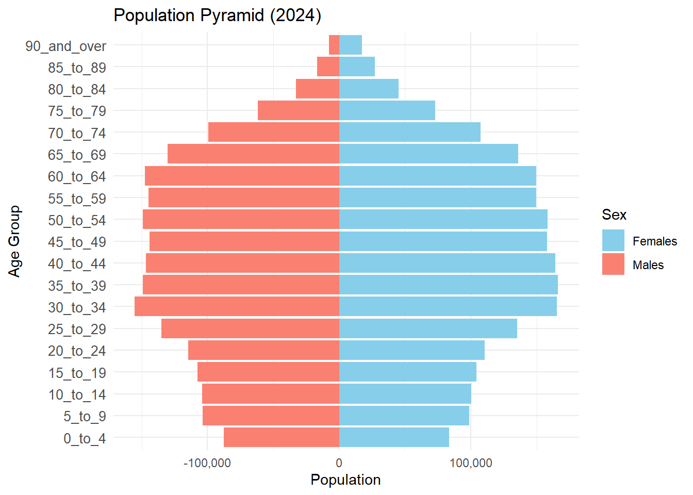

pacman::p_load(tidyverse, readxl,
janitor, lubridate,
ggplot2, ggthemes,
scales, ggridges,
ggdist, patchwork)Take Home Exercise 1A - Peer Learning
Take Home Exercise 1A - Peer Learning
1.0 Introduction
In continuation of our Take Home Exercise 1 performed earlier, we are required to critique on our peer’s Take Home Exercise 1 to learn and improve on their visualisations performed.
For this exercise we are critiquing the visualisations created by a fellow student Enrico Sebastian.
2.0 Replicating of Package and Data Load performed by Peer
2.1 Loading of Packages used by student
2.2 Loading of Data used by student
Resident_Data <- read.csv("data/respopagesexfa2024.csv")Glimpse
glimpse(Resident_Data)Rows: 75,696
Columns: 7
$ PA <chr> "Ang Mo Kio", "Ang Mo Kio", "Ang Mo Kio", "Ang Mo Kio", "Ang Mo K…
$ SZ <chr> "Ang Mo Kio Town Centre", "Ang Mo Kio Town Centre", "Ang Mo Kio T…
$ AG <chr> "0_to_4", "0_to_4", "0_to_4", "0_to_4", "0_to_4", "0_to_4", "0_to…
$ Sex <chr> "Males", "Males", "Males", "Males", "Males", "Males", "Females", …
$ FA <chr> "<= 60", ">60 to 80", ">80 to 100", ">100 to 120", ">120", "Not A…
$ Pop <int> 0, 10, 10, 50, 10, 0, 0, 0, 20, 30, 10, 0, 0, 10, 30, 70, 20, 0, …
$ Time <int> 2024, 2024, 2024, 2024, 2024, 2024, 2024, 2024, 2024, 2024, 2024,…
Important
The dataset here is noted to be wrong, but we will only correct this in section 4. The instructions specified for the dataset “Singapore Residents by Planning Area / Subzone, Single Year of Age and Sex, June 2024”. However the student here has used the dataset “Singapore Residents by Planning Area / Subzone, Age Group, Sex and Floor Area of Residence, June 2024”
The differences in datasets are mainly:
| Aspect | Incorrect Dataset (respopagesexfa2024.csv) | Correct Dataset (respopagesex2024.csv) |
|---|---|---|
| Age Variable | AG (Age Group) | Age |
| Age Format | Categorical (e.g., ‘0_to_4’, ‘5_to_9’) | Continuous (e.g., ‘0’, ‘1’, …, ‘90+’) |
| Granularity | Grouped in 5-year bins | Single-year until 90+ |
| Extra Variables | Includes FA (Floor Area) | N/A |
| Population Representation | Aggregated within age groups | Exact population by age |
3.0 Critique of Visualisations
3.1 Selected Visualisation #1 - Pyramid Bar chart based on Population Area
pyramid_data <- aggregate(Pop ~ `AG` + Sex, data = Resident_Data, sum)
age_order <- c("0_to_4", "5_to_9", "10_to_14", "15_to_19", "20_to_24", "25_to_29",
"30_to_34", "35_to_39", "40_to_44", "45_to_49", "50_to_54", "55_to_59",
"60_to_64", "65_to_69", "70_to_74", "75_to_79", "80_to_84", "85_to_89",
"90_and_over")
pyramid_data$AG <- factor(pyramid_data$AG, levels = age_order)
pyramid_data$Pop[pyramid_data$Sex == "Males"] <- -pyramid_data$Pop[pyramid_data$Sex == "Males"]
ggplot(data = pyramid_data, aes(x = AG, y = Pop, fill = Sex)) +
geom_bar(stat = "identity") +
coord_flip() +
labs(title = "Population Pyramid (2024)", x = "Age Group", y = "Population") +
scale_y_continuous(labels = comma) +
scale_fill_manual(values = c("skyblue", "salmon")) +
theme_minimal() +
theme(axis.text.y = element_text(size = 10)) 
Critique of student’s visualisation #1
Positive notes:
Classic pyramid chart with distinct representation of Females and Males by Age Group.
Age Groups are logically sorted from youngest to oldest, aligns with natural age progression.
Y Axis label and title is clear and interpretable.
Improvement notes:
X-Axis label for Males is at a negative value (-100,000) which is hard to inteprete (i.e. counter intuitive). Title can clearly also describe Population Size as Population may represent score or size per area as the title suggests “Population Area”.
Color Legend used to represent Female / Male is confusing as Males are conventially represented by Blue and Females Red/Pink. The legend label is also inverse of the chart representation as readers typically read from left to right, Males should be be presented first followed by Female.
No value labels and x-axis labels are represented too far apart (100,000 intervals) to tell the differences in values between Females and Males especially in age groups 30 to 64 as the bars on both sides are almost of equal length.
Fixes:
- Correct X-Axis label to positive values and change X-Axis title to Population Size
- Change Color Legend - Male: Blue and Female: Pink. Change Legend position to the bottom to co-incide with the left label for male and right label for female for easy visual reference.
- Add value labels and decrease X-Axis value intervals to 50,000 and Format Y-Axis Labels to remove “_” spacers to improve readability.
We will perform the Fixes subsequently in section 4, as we will need to re-load the correct dataset to proceed as well.
3.2 Selected Visualisation #2 - Box Plot based on Age Range
FA_order <- c("<= 60", ">60 to 80", ">80 to 100", ">100 to 120", ">120", "Not Available")
Resident_Data$FA <- factor(Resident_Data$FA, levels = FA_order)
ggplot(Resident_Data, aes(x = FA, y = Pop)) +
geom_boxplot(fill = "lightgreen") +
labs(title = "Population by Functional Age Range (FA)", x = "FA Band", y = "Population") +
theme_minimal()x
Critique of student’s visualisation #2
While the visualisation has significant conceptual flaws, we note the following positive notes:
- Use of categorical data as columns, with logical meaningful order (if interpreted correctly).
- Attempt to use boxplot to show spread of population across different age groups
- Clean theme and layout to show spread of data.
Improvement notes, in addition to data corrections as mentioned earlier (i.e. misinterpretation of FA):
- Include meaningful categorical labels per age group for representation of the category and ease understanding by the reader.
- Ensure Y-Axis Label is corrected to Population Size to ease interpretation
- Interapability of chart can be improved as the outliers from the boxplot has almost formed a line all the categorical groups, which may be due to either data or the lacking of grouping e.g. by subzone.
Fixes:
- Age groups to be divided into standard 5 year bins, as the correct data set provides the age in a continous variable.
- Improve on axis title and value labels.
- Group population size data by planning areas, and label outliers for further exploration and investigations.
We will perform the Fixes subsequently in section 4, as we will need to re-load the correct dataset to proceed as well.
4.0 Visualisation Makeover
4.1 Loading the Data
df <- read_csv("data/respopagesex2024.csv")
glimpse(df)Rows: 60,424
Columns: 6
$ PA <chr> "Ang Mo Kio", "Ang Mo Kio", "Ang Mo Kio", "Ang Mo Kio", "Ang Mo K…
$ SZ <chr> "Ang Mo Kio Town Centre", "Ang Mo Kio Town Centre", "Ang Mo Kio T…
$ Age <chr> "0", "0", "1", "1", "2", "2", "3", "3", "4", "4", "5", "5", "6", …
$ Sex <chr> "Males", "Females", "Males", "Females", "Males", "Females", "Male…
$ Pop <dbl> 10, 10, 10, 10, 10, 10, 10, 10, 30, 10, 20, 10, 20, 30, 30, 10, 3…
$ Time <dbl> 2024, 2024, 2024, 2024, 2024, 2024, 2024, 2024, 2024, 2024, 2024,…4.2 Clean the dataset
Convert the Age90+ to 90 to obtain a continous variable as Age_Num.
df <- read_csv("data/respopagesex2024.csv") %>%
mutate(
Age_Num = if_else(Age == "90_and_Over", 90, as.numeric(Age)),
Population = Pop
)4.3 Fixes on Visualisation 1
Recap:
- Correct X-Axis label to positive values and change X-Axis title to Population Size
- Change Color Legend - Male: Blue and Female: Pink. Change Legend position to the bottom to co-incide with the left label for male and right label for female for easy visual reference.
- Add value labels and decrease X-Axis value intervals to 50,000 and Format Y-Axis Labels to remove “_” spacers to improve readability.
# === STEP 2: Find Maximum Age ===
max_age <- max(df$Age_Num, na.rm = TRUE)
# === STEP 3: Prepare Aggregated Data ===
plot_df <- df %>%
mutate(
AgeGroup = cut(
Age_Num,
breaks = if (max_age > 90) {
c(seq(0, 85, by = 5), 90, max_age + 1)
} else {
c(seq(0, 85, by = 5), max_age + 1)
},
right = FALSE,
labels = if (max_age > 90) {
c(paste0(seq(0, 80, by = 5), "-", seq(4, 84, by = 5)), "90+")
} else {
c(paste0(seq(0, 80, by = 5), "-", seq(4, 84, by = 5)), "90+")
}
)
) %>%
group_by(AgeGroup, Sex) %>%
summarise(Population = sum(Population), .groups = "drop") %>%
mutate(
Population = ifelse(Sex == "Males", -Population, Population),
PopulationAbs = abs(Population)
)
# === STEP 4: Plot Population Pyramid ===
ggplot(plot_df, aes(x = AgeGroup, y = Population, fill = Sex)) +
geom_bar(stat = "identity", width = 0.90, color = "black") +
geom_text(
aes(label = format(PopulationAbs, big.mark = ",")),
size = 4.5,
color = "black",
hjust = ifelse(plot_df$Sex == "Males", -0.05, 1.05),
show.legend = FALSE
) +
coord_flip() +
labs(
title = "Singapore's Population Pyramid (June 2024)",
x = "Age Group",
y = "Population Size"
) +
scale_y_continuous(
labels = function(x) format(abs(x), big.mark = ",", scientific = FALSE),
limits = c(-200000, 200000),
breaks = seq(-200000, 200000, by = 50000),
minor_breaks = seq(-200000, 200000, by = 25000)
) +
scale_fill_manual(
values = c("Males" = "#87CEFA", "Females" = "#FFB6C1"),
breaks = c("Males", "Females")
) +
theme_minimal() +
theme(
plot.title = element_text(hjust = 0.5, face = "bold"),
legend.position = "bottom",
axis.text.y = element_text(hjust = 0),
panel.grid.minor.x = element_line(color = "grey85", size = 0.3)
)
Insight
The improved population pyramid corrects visual errors from the previous version and enhances clarity with clear sex-based colors, labeled bars, and intuitive groupings. It reveals a well-defined working-age bulge, ongoing low birth rates, and gender imbalance in elderly cohorts — all of which are critical for long-term social policy and urban planning.
1. üìà Largest Cohorts: Ages 30‚Äì49
The most populous bands are:
Males: 30–34 (155,630) and 35–39 (149,340)
Females: 35–39 (166,150), 40–44 (164,120), and 45–49 (158,690)
This reflects Singapore’s core working-age population, critical to economic productivity and tax base.
2. üë∂ Declining Birth Trends
The 0–4 group is one of the smallest, with 87,850 males and 83,550 females.
Indicates low fertility, consistent with long-term demographic trends and policy concern.
3. üëµ Female Dominance in Older Ages
In age groups 65+, females consistently outnumber males (e.g., 90+: 44,740 females vs 24,750 males).
Reflects higher female life expectancy, important for healthcare and eldercare planning.
4. üìâ Gradual Inversion Begins at Age 55+
The pyramid narrows beyond 55, showing population aging.
Singapore’s demographic is transitioning into an inverted pyramid, signaling increased dependency ratios.
4.4 Fixes on Visualisation 2
Recap:
- Age groups to be divided into standard 5 year bins, as the correct data set provides the age in a continous variable.
- Improve on axis title and value labels.
- Group population size data by planning areas, and label outliers for further exploration and investigations.
library(tidyverse)
library(scales)
library(ggstatsplot)
library(ggrepel)
# === STEP 1: Find the Maximum Age ===
max_age <- max(df$Age_Num, na.rm = TRUE)
# === STEP 2: Aggregate Population by Planning Area and Age Group ===
boxplot_df_pa <- df %>%
mutate(
AgeGroup = cut(
Age_Num,
breaks = if (max_age > 90) {
c(seq(0, 85, by = 5), 90, max_age + 1)
} else {
c(seq(0, 85, by = 5), max_age + 1)
},
right = FALSE,
labels = if (max_age > 90) {
c(paste0(seq(0, 80, by = 5), "-", seq(4, 84, by = 5)), "90+")
} else {
c(paste0(seq(0, 80, by = 5), "-", seq(4, 84, by = 5)), "90+")
}
)
) %>%
group_by(PA, AgeGroup) %>%
summarise(Population = sum(Population), .groups = "drop") %>%
filter(Population > 0)
# === Ensure ordered AgeGroup factor ===
boxplot_df_pa$AgeGroup <- factor(
boxplot_df_pa$AgeGroup,
levels = c(
"0-4", "5-9", "10-14", "15-19", "20-24", "25-29", "30-34",
"35-39", "40-44", "45-49", "50-54", "55-59", "60-64", "65-69",
"70-74", "75-79", "80-84", "90+"
)
)
# === STEP 3: Summary Stats ===
top_group <- boxplot_df_pa %>%
group_by(AgeGroup) %>%
summarise(MeanPop = mean(Population), .groups = "drop") %>%
top_n(1, MeanPop)
median_labels <- boxplot_df_pa %>%
group_by(AgeGroup) %>%
summarise(Median = median(Population), .groups = "drop") %>%
mutate(label = paste0("Q2: ", comma(Median)))
overall_mean <- mean(boxplot_df_pa$Population)
# === STEP 4: Identify Outliers by AgeGroup ===
outliers_pa <- boxplot_df_pa %>%
group_by(AgeGroup) %>%
mutate(
Q1 = quantile(Population, 0.25),
Q3 = quantile(Population, 0.75),
IQR = Q3 - Q1,
is_outlier = Population > Q3 + 1.5 * IQR
) %>%
filter(is_outlier) %>%
ungroup()
# === STEP 5: Custom Blue Gradient (light → #0072ce) ===
age_colors <- c(
"#e3f2fd", "#d3e8fb", "#c6defa", "#aad0f7", "#8ec2f4", "#72b4f1",
"#56a6ee", "#449be8", "#3491e2", "#2487dc", "#147cd6", "#0c78d2",
"#0a75ce", "#0873cb", "#0672c8", "#0472c6", "#0272d1", "#0072ce"
)
names(age_colors) <- levels(boxplot_df_pa$AgeGroup)
# === STEP 6: Plot ===
ggplot(boxplot_df_pa, aes(x = AgeGroup, y = Population, fill = AgeGroup)) +
geom_boxplot(
color = "darkblue",
outlier.alpha = 0.2,
width = 0.7
) +
stat_summary(
fun = mean,
geom = "point",
color = "red",
size = 2.8,
shape = 18
) +
geom_label(
data = median_labels,
aes(x = AgeGroup, y = Median, label = label),
size = 3,
color = "black",
fill = alpha("white", 0.7),
label.size = 0.2,
label.r = unit(0.15, "lines")
) +
geom_hline(yintercept = overall_mean, linetype = "dashed", color = "grey30") +
geom_label(
data = data.frame(AgeGroup = "5-9", Population = overall_mean, label = "Overall Mean"),
aes(x = AgeGroup, y = Population, label = label),
inherit.aes = FALSE,
size = 3.5,
color = "grey30",
fill = alpha("white", 0.7),
label.size = 0.2,
label.r = unit(0.15, "lines"),
vjust = -2.2
) +
geom_label(
data = top_group,
aes(x = AgeGroup, y = MeanPop, label = "Highest mean"),
inherit.aes = FALSE,
size = 3.5,
color = "darkred",
fill = alpha("white", 0.7),
label.size = 0.2,
label.r = unit(0.15, "lines"),
vjust = -2.2
) +
geom_text_repel(
data = outliers_pa,
aes(x = AgeGroup, y = Population, label = PA),
size = 2.8,
color = "black",
box.padding = 0.25,
point.padding = 0.2,
segment.size = 0.2,
max.overlaps = 10
) +
scale_y_continuous(
labels = label_comma(),
breaks = seq(0, 30000, by = 5000)
) +
scale_fill_manual(values = age_colors, guide = "none") +
labs(
title = "Distribution of Planning Area Population by 5-Year Age Group (June 2024)",
subtitle = "Each dot = 1 planning area (non-zero). Red dot = mean. Box = IQR. Dashed line = overall mean.\nOutliers are labeled with Planning Area names.",
x = "Age Group",
y = "Total Population per Planning Area"
) +
theme_minimal(base_size = 13) +
theme(
plot.title = element_text(face = "bold"),
axis.text.x = element_text(angle = 30, hjust = 1),
panel.grid.major.y = element_line(color = "grey80", size = 0.3)
)
Insight
The improved chart transforms raw data into an insightful and reader-friendly demographic visualization, enabling planners and analysts to easily spot population peaks, dominant age groups, and anomalous planning areas. The original FA-based plot, by contrast, offers limited clarity and analytical value due to coarse banding, absent labeling, and flat styling.
üîç Top-Level Insights
1. üìä Young Adults (25‚Äì34) Have the Highest Concentration
The 30–34 age group has the highest mean population among all 5-year bands, marked by the “Highest mean” label.
This suggests a demographic bulge of working-age adults settling in certain planning areas—likely due to employment opportunities, housing preferences, or family formation phase.
2. üßí Children and Teen Groups (0‚Äì19) Have Lower Populations
Age groups from 0–4 to 15–19 have lower medians (Q2) and are below the overall mean.
This may reflect Singapore’s low birth rate or population aging dynamics.
3. üëµ Elderly Population (75+) Shows Sparse but Notable Outliers
Median values drop sharply after 70–74, showing a decreasing elderly concentration per PA.
However, Bedok is labeled as an outlier in multiple senior age groups (75–79, 80–84, 90+), indicating a high concentration of elderly residents in that area.
üìå Outlier Insights
üî∫ Sengkang (Age Group: 5‚Äì9)
- Marked as an outlier in the 5–9 age group, suggesting a relatively younger, family-oriented population cluster in Sengkang.
üî∫ Bedok (Ages: 75‚Äì90+)
Appears multiple times as an outlier across three senior age brackets, highlighting it as a key aging community.
Urban planners and eldercare service providers may need to prioritize resource allocation here.
üìâ Decline in Population Beyond Age 70
Population medians drop consistently after the 65–69 age group.
This pattern aligns with natural mortality trends and indicates a potential transition point in population dependency dynamics.
üìé Statistical Markers Aid Interpretation
The overall mean (~6,000–7,000) acts as a baseline for comparison across age groups.
Median (Q2) labels reinforce central tendency per age group and show where distributions are skewed.
ü߆ Planning & Policy Implications
Infrastructure needs for the 30–44 age group (e.g., housing, childcare, transport) should remain a priority.
Targeted support for elderly PAs like Bedok is critical (e.g., healthcare, accessibility upgrades).
Youth support policies could be reviewed in PAs with persistently low young population levels.